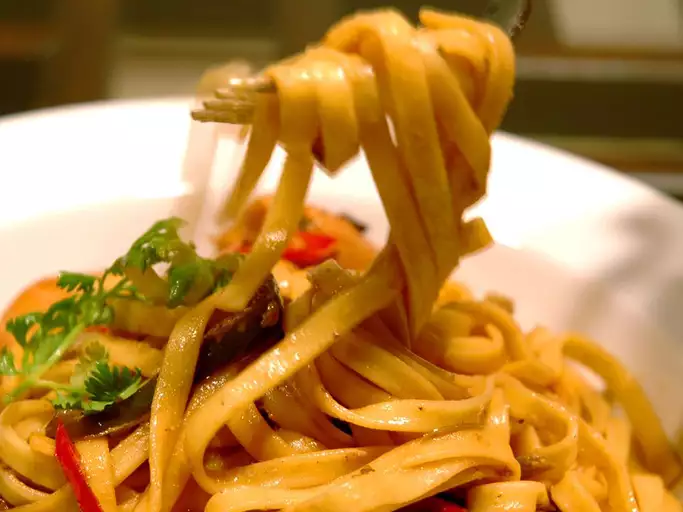

Chicken Tequila Fettucini

Ingredients
- 1 (16 ounce) package fettuccine pasta
- ⅓ cup chopped fresh cilantro
- 2 tablespoons minced garlic
- 2 tablespoons minced jalapeno peppers
- 3 tablespoons butter
- ½ cup chicken stock
- 3 tablespoons tequila
- 2 tablespoons fresh lime juice
- 3 tablespoons soy sauce
- 1 ¼ pounds skinless, boneless chicken breast halves - cubed
- ¼ red onion, sliced
- 1 red bell pepper, thinly sliced
- ½ yellow bell pepper, thinly sliced
- ½ green bell pepper, sliced
- 1 ½ cups heavy whipping cream
Steps
- In a medium saucepan, saute the cilantro, garlic and jalapeno pepper in 2 tablespoons of butter or margarine over medium heat for 4 to 5 minutes. Add the stock, tequila and lime juice. Bring the mixture to a boil and cook until reduced to a paste-like consistency. Set aside.
- Pour soy sauce over the chicken and set aside for 5 minutes. Meanwhile, In a medium sized skillet, saute the onion and the red, green and yellow bell peppers with the remaining tablespoon of butter or margarine, stirring occasionally.
- Meanwhile, cook fettuccini according to package directions.
- When the peppers have wilted, add the chicken and soy sauce. Toss and add the reserved tequila/lime paste and cream. Bring to a boil. Gently simmer until chicken is cooked through and sauce is thick. Toss with well drained fettuccini and garnish with cilantro. Serve.
Return to the main page